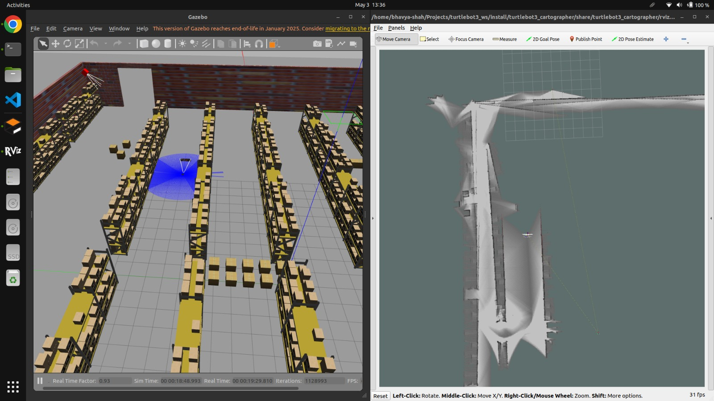

✅ Live Hardware · Demo Video Available
ASU — Experimental & Deployment of Robotic Systems · Jan–May 2025
Autonomous Warehouse Patrolling Robot
Designed and deployed a ROS2-based autonomous patrol robot for structured warehouse environments. Integrated Nav2, SLAM, LiDAR, IMU, and depth-camera inputs to support mapping, localization, obstacle detection, and waypoint patrol with minimal human intervention.
ROS2
Nav2
SLAM
LiDAR
IMU
Depth Camera
Python
Gazebo